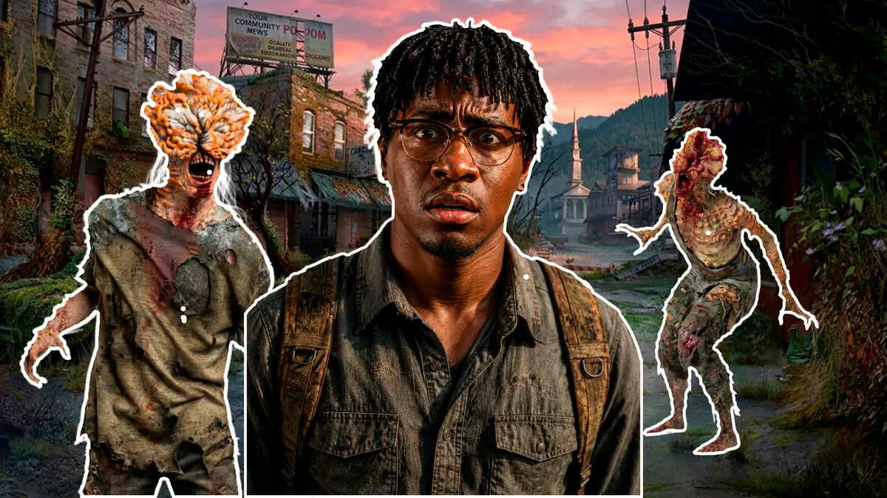
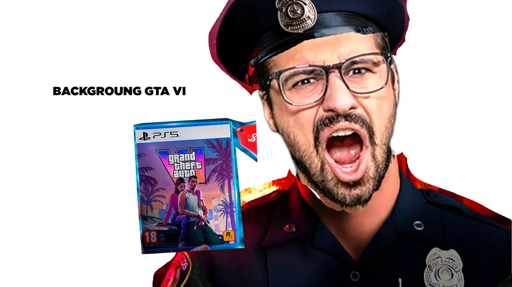
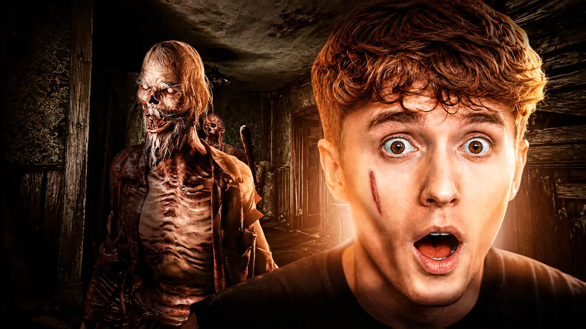
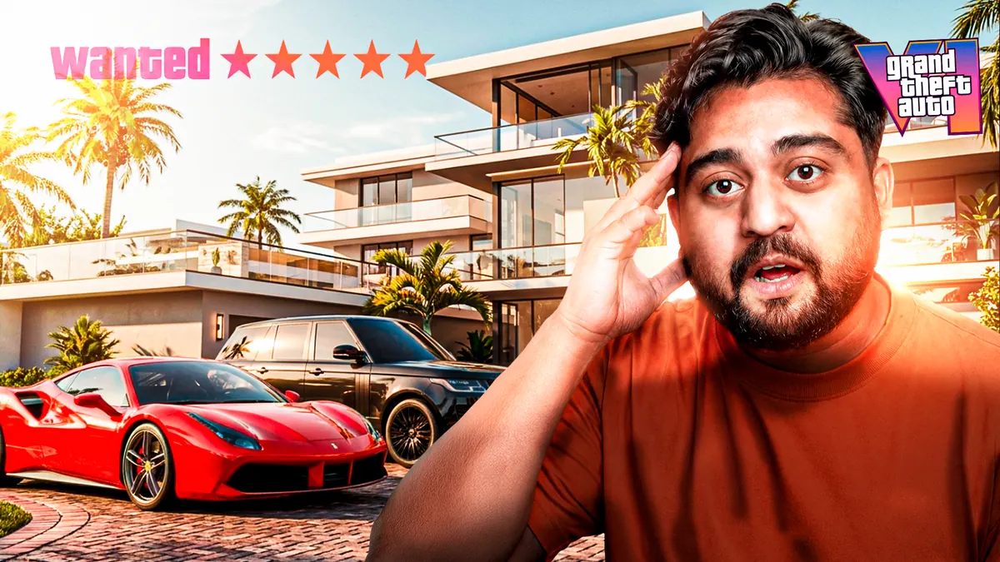
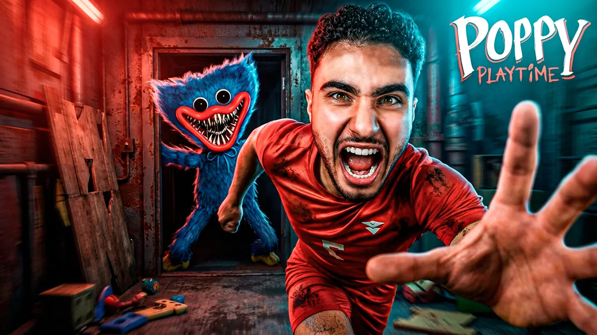
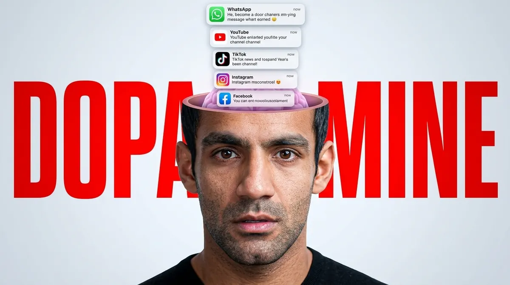

Vídeo bom não basta.
É a thumbnail que decide o clique.
A Thumz pega o rascunho torto que só você entenderia e devolve uma thumbnail ultrarrealista, pronta pra publicar — em menos de 2 minutos, sem Photoshop e sem esperar designer.
Arraste e compare

ANTES DEPOIS
ANTES DEPOISSeu vídeo já morreu antes de alguém assistir
Ninguém lê o título com calma. Ninguém abre a descrição. As pessoas decidem em menos de um segundo, só olhando a miniatura — e se ela não gritar "clica aqui", seu vídeo vira mais um número perdido no feed.
Fazer você mesmo
Horas travado num editor de imagem pra sair algo que parece feito às pressas — porque foi.
Contratar um designer
Preço que sobe todo mês, prazo que nunca cabe no seu calendário, e um vai-e-vem de ajustes que não acaba.
Usar template pronto
O mesmo template que outros 40 canais do seu nicho já usaram essa semana. Zero destaque, zero clique.
Você não precisa saber desenhar.
Só precisa ter uma ideia.
A Thumz foi treinada com as 95 mil thumbnails mais virais do YouTube — não protótipos bonitos que ninguém clica. Você manda um rascunho torto, uma referência qualquer, uma ideia solta. A IA devolve uma imagem ultrarrealista, pronta pra publicar.
Envie seu rascunho
Vale desenho no papel, print de referência, um rabisco no celular, ou desenhe direto no canvas integrado da Thumz.
Descreva o que você quer
Sem prompt técnico, sem termo de programador. Só uma descrição em português, do seu jeito.
Gere em 1 clique
Sua thumbnail sai pronta em menos de 2 minutos, em alta resolução.
A Thumz não para na thumbnail pronta
Enquanto outras ferramentas só geram uma imagem e te deixam na mão, a Thumz te ajuda antes, durante e depois da criação.
IA que avalia sua thumbnail
Depois de gerada, a Thumz analisa a thumbnail, dá uma nota de viralidade e sugere o que melhorar antes de você publicar.
Canvas de esboço integrado
Não precisa nem sair da plataforma pra desenhar. A Thumz tem um canvas próprio pra você esboçar sua ideia direto ali.
Comunidade Thumz
Veja o que outros criadores estão gerando, compartilhe suas thumbnails e tire ideias de quem já está bombando.
Alta resolução, sempre
Nada de imagem borrada ou pixelada. Toda thumbnail sai em resolução real, pronta pra publicar.
Zero marca d'água
Em nenhum plano. A thumbnail que você gera é sua, sem logo escondido no canto.
Geração generosa em todo plano
Nada de "3 grátis e depois paga caro". Todo plano já vem com um volume real de gerações por mês.
Criadores de todo tipo de canal já usam a Thumz
Terror, games, finanças, humor, educação — não importa o nicho. Se o criador teve uma ideia, a Thumz virou thumbnail.




Criadores que pararam de se preocupar com thumbnail
"Eu levava duas horas pra fazer uma thumb ruim. Hoje levo dois minutos pra fazer uma boa."
"Testei mais variação de thumbnail numa semana do que no ano inteiro de canal."
"Meu CTR subiu de forma visível assim que troquei o template pela Thumz."
Escolha o plano do tamanho do seu canal
Thumz Start
R$97/mês
Pra quem tá começando a levar o canal a sério.
- 50 thumbnails por mês
- Resolução Full HD (1920×1080)
- 1 imagem por geração
- Ideal para 3–5 vídeos/mês
Thumz Creator
R$197/mês
Pra quem posta com frequência e não pode travar na thumbnail.
- 150 thumbnails por mês
- Resolução 2K (2560×1440)
- 2 imagens por geração
- Suporte prioritário
- Ideal para 10–15 vídeos/mês
Thumz Scale
R$297/mês
Pra canais grandes, times e agências.
- 400 thumbnails por mês
- Resolução 4K
- 4 imagens por geração
- Suporte VIP + acesso antecipado a recursos
- Ideal para agências e múltiplos canais
Perguntas frequentes
Uma ferramenta que transforma rascunhos e ideias em thumbnails profissionais usando inteligência artificial, sem exigir nenhuma habilidade de design.
Não. Um rabisco simples já é suficiente. A IA entende a intenção, não a técnica do desenho.
Depende do plano escolhido. O Start inclui 50, o Creator 150 e o Scale 400 gerações mensais.
Não. Toda thumbnail gerada é sua, sem marca d'água, pronta pra publicar.
Sim, em qualquer plano você tem uso comercial liberado para seus próprios vídeos e canais.
Em média, menos de 2 minutos do envio do rascunho até a imagem final.
O que a Thumz não faz
A Thumz não define sua estratégia de conteúdo, não escolhe seu público e não garante que um vídeo vai viralizar. Ninguém consegue prometer isso.
O que ela garante é simples: você testa 10 ideias de thumbnail no tempo que levaria pra testar uma só.
E isso é só o começo — a Thumz está em constante evolução, com muita coisa nova a caminho.
Sua próxima thumbnail pode ser a que muda seu CTR
Pare de adivinhar o que funciona. Comece a testar.
Criar minha primeira thumbnail